第 7 章：压缩列表¶
压缩列表的各个部分
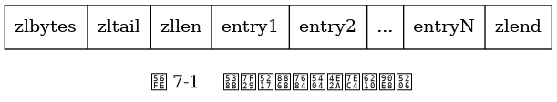
一个包含三个节点的压缩列表示例。
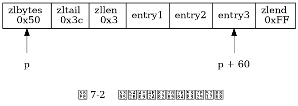
一个包含五个节点的压缩列表示例。
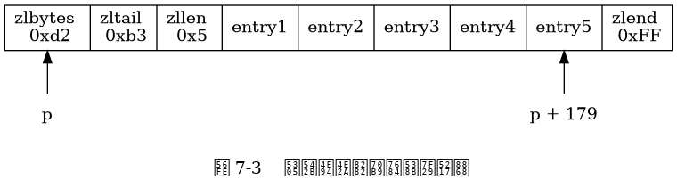
压缩列表节点的各个组成部分。
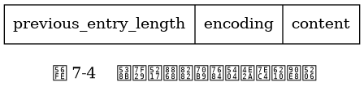
压缩列表节点的 previous_entry_length 属性示例。
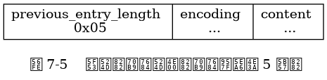
使用压缩列表节点的 previous_entry_length 属性遍历整个压缩列表的过程。
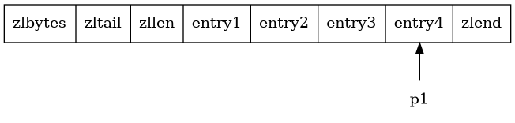
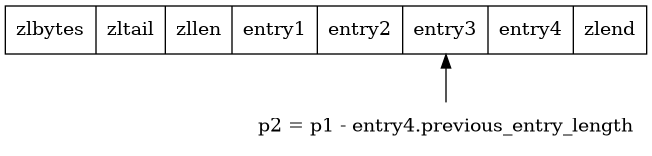
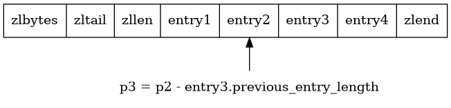
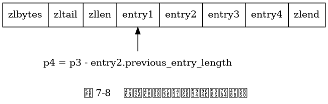
一个保存着 "hello world" 字符串的压缩列表节点示例。
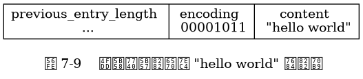
一个保存着整数 10086 的压缩列表节点示例。
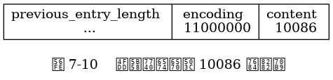
向压缩列表添加新节点并引发连锁更新的过程。
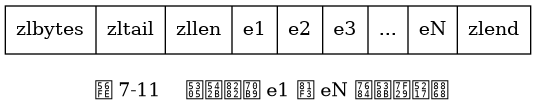
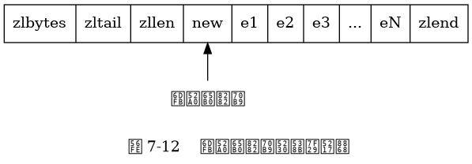
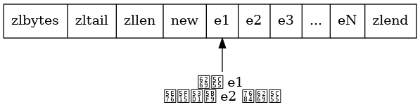
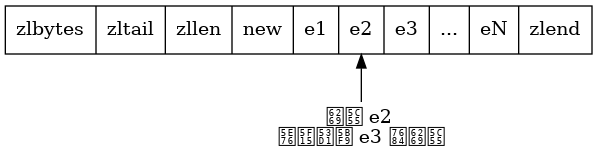
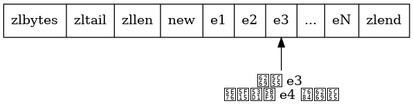
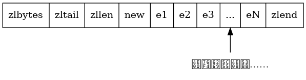
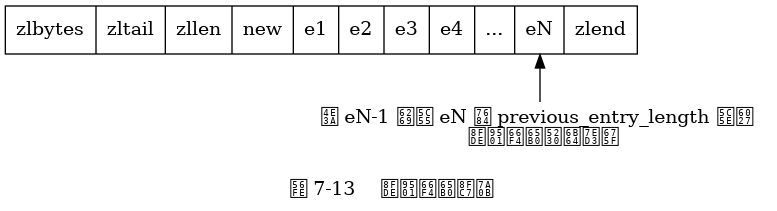